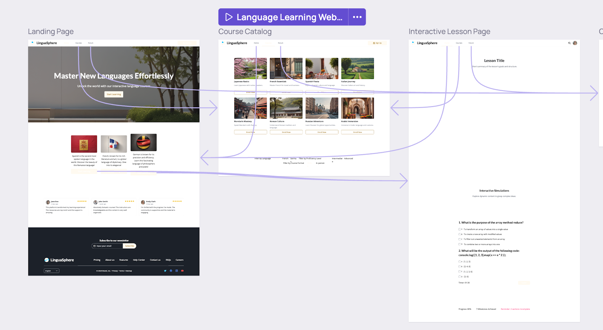

Related Project Review
We reviewed several existing tools that share similarities with Blueprint AI:
Wix
Wix is a popular website builder that allows users to build all kinds of websites, ranging from personal blogs, company websites to storefronts. Website creation is done entirely through the editing studio, without the user needing to write code at all. Wix extends the website creation concept further by allowing users to host their websites on Wix’s domain, and review analytics such as viewer traffic. In 2016, Wix embarked on implementing AI for website design [1] and currently features AI tools that aid in section creation and text generation.
| Feature | Our Evaluation | Include? |
|---|---|---|
| No code needed for designing | Allows for users to focus primarily on design and not worry about coding. | Yes |
| Allow hosting websites on domain | Wix does not offer an exporting to code function, rather users host their websites on their domain. With the exporting feature of Blueprint AI into various GUI frameworks, this feature is counterintuitive as users would export UI code to integrate with their own backend for greater control over publishing their product. | No |
| AI tools, multiple options generation | Wix's AI tools allow for text generation and also section creation. This is highly versatile and useful. The AI also generates multiple design options for the user to choose from which is also very practical for the user. | Yes |
Microsoft Power Pages
Microsoft PowerPages is a platform designed for rapid website development, offering a user-friendly drag-and-drop interface builder that enables users to create applications with ease. The platform leverages AI-assisted UI recommendations to enhance the design process. PowerPages seamlessly integrates with a variety of backend services such as its Dataverse storage capabilities, security authentication features and analytics functionalities [2]. One key feature of PowerPages that set it apart from more mainstream website creators is its ability to export the code in HTML, CSS and JavaScript, the user can then further edit the code [3].
| Feature | Our Evaluation | Include? |
|---|---|---|
| Backend services integration, security authentication | A useful feature that helps translate design into development and link front end to backend more easily. Takes the frontend development one step further. These features are locked behind a paywall and are subscription based - limiting the types of users who are willing and able to afford to use them. Blueprint AI will be a free to use product for all users to use, with no tiered features | Partial inclusion in the form of exporting the code into GUI frameworks that allow for easier integration with backend. |
| Exporting of code. | Exporting is a standout feature that is important for website development. As for PowerPages, this feature is limited to exporting in HTML, CSS and JavaScript and is not integrated into an IDE, changes made on the IDE are not displayed on the PowerPages app and vice versa. This adds a layer of inconvenience that Blueprint AI aims to solve. | Yes. Aim to further increase exporting capabilities and VSCode integration for ease of use. |
Figma
Figma is a powerful web-based design tool known for its collaborative design interface. While Figma itself is not specifically tailored for frontend development like Blueprint AI, it offers robust UI design capabilities and can integrate with code-generation plugins.
| Feature | Our Evaluation | Include? |
|---|---|---|
| Collaborative Design Interface | Figma allows multiple users to design simultaneously, enhancing team collaboration. This is a standout feature for UI/UX teams. | Partial Inclusion — Potential for team collaboration features but simplified for Blueprint AI. |
| Prototyping and Animation | Figma allows for interactive prototypes and animated transitions directly in the tool. | No — This is better suited for design rather than code generation. |
| Code Export through Plugins | Figma supports third-party plugins that export designs into React, Flutter, or HTML/CSS code. | Yes — A similar feature for streamlined code export will be integrated in Blueprint AI. |
| Auto Layout | Auto Layout enables flexible design structures that adapt to content changes, improving design consistency. | Yes — This feature aligns well with Blueprint AI’s goal to generate adaptable UI designs. |
| AI-Powered Features | While Figma’s AI capabilities are still evolving, some plugins offer AI-assisted content generation. | Partial Inclusion — Blueprint AI’s AI will focus on complete frontend generation, including layout and design refinement. |
Visily
Visily is highly similar to other website builders like Wix but has much more capabilities and functionalities. Besides webpages, Visily can also create mobile phone pages, wireframes and mockups. The use of AI is also more prominent and wider in Visily as compared to Wix as Visily allows the user to upload screenshots of existing UI to kickstart the generation process, a welcomed feature from the usual description/ text based prompts that Wix offers. Visily supports multi-page generation and a multi-page view as shown below which gives a more holistic view of the user’s design.
| Feature | Our Evaluation | Include? |
|---|---|---|
| Can create mobile pages | As there are more mobile phones than computers on this planet [4], the need for tailored mobile page front end design is apparent. Blueprint AI will thus need to include this feature so as to increase its useability. | Yes |
| Use screenshots/ images as AI reference point | Screenshots are a quick and fantastic way to tell the AI exactly what you want generated as describing with text prompts can get too tedious and is also difficult to describe clearly to the AI. | Yes |
| Multi-page generation and editing | Frontend development involves more than just one page, having AI and a studio that can view, edit and create multiple pages would be extremely useful in creating a cohesive and consistent frontend design for the user. | Yes |
Evaluating Microsoft Copilot v1.0
Our first project brief stated that we were to improve upon a project made by a group of
UCL postgraduate students in 2024 for their IXN module titled Microsoft Copilot UI v1.0.
The scope of this was largely similar to Blueprint AI, with the main feature of incorporating
AI to generate, edit and export user interfaces all within a VSCode extension.
Our initial brief wanted us to explore, using the existing codebase, other frameworks
for exporting the frontend designs into frontend frameworks.
The link to the entire repository can be found in [5], including a demo video of that project.
Overview of Microsoft Copilot UI v1.0
Copilot UI v1.0 is a webview-based React editor integrated into a VSCode Extension,
primarily written in Typescript. The main backend code, consisting of the main program
logic (API calls, testing, JSON tree conversion) is located in the src directory while
the frontend of v1.0 is found in the webview-ui directory. The system architecture of
v1.0 is shown in Figure 1, this is taken directly from the GitHub repository. The key
features of the project and brief explanations are listed in the table below.
Figure 1. Copilot UI v1.0 System Architecture
| Key Feature | Explanation |
|---|---|
| VSCode Extension Wrapper File reference: .vscode |
VSCode API interacts with the editor [6], workspace, and key storage. Entry point for users to interact with the system, such as opening the webview, saving/loading projects, and triggering AI generation. |
| React Editor | Craft.js was used as a framework for building drag-and-drop page editors. FluentUI, Microsoft’s design system, was used for the editor's components like text boxes. React Grid Layout was used to manage the layout of components within the editor, providing responsive and resizable grids. |
| AI integration File references: src/generateImage src/generateLayout |
Azure, OpenAI GPT-4: Used for generating text layouts and processing natural language inputs such as the text prompts. DALL-E 3: Used for generating images based on user prompts or layout schemas like screenshots of websites. Users input and use their own API keys. |
|
Generated Layout Node Tree File reference: src/generateLayout/buildNodeTree.ts |
The system uses AI (e.g., GPT-4) to interpret the input and generate a corresponding layout node tree. JSON-based tree structure representing the arrangement and properties of components in a design is generated and displayed in the editor. |
|
Exporting Frameworks File references: src/HTML src/WinUI |
HTML + CSS: Converts the JSON node tree into HTML and CSS for web use. WinUI: Converts the design into WinUI format compatible with Windows applications [7]. |
Learning points
1. Good system architecture
The system architecture (Figure 1) is well-thought out and planned suitably to meet the requirements of the project. This gave us some semblance of structuring and organising such a complicated system.
The VSCode extension structure can be replicated and modeled for our version of the project as it relies on the existing, well-documented VSCode API library [6].
Figure 2 shows a code snippet taken from the file in: src/generateLayout/generateLayout.ts
This file, along with other similar files found in the generateLayout directory was useful as
it allowed us to adapt our project based on this similar structure of importing the AI API library
and component types, making API calls to OpenAI. Furthermore, we can also improve on the meta prompts
(Figure 2, line 10) beyond just safety and ethics, to use them to refine the generated node tree.
Meta prompts are an excellent way of guiding large language models to perform complex tasks and reasoning
in a more methodical and logical way [8]. Based on the research paper in [8], we can leverage the use of
meta prompts to generate more refined and tailored results for the user.
Figure 2. Code snippet of generatedLayout.ts taken from v1.0
2. Choice of Frameworks
The implementation of widely-used, industry relevant frameworks such as React and WinUI helped us to scope our research more clearly.
This gave us a good sense of what we could start exploring and looking into without having to write our own components from scratch.
This is discussed further in section 2: Technology Review.
This project was a useful example of the existing frameworks we can use, where v1.0
highlights the ability to successfully implement such frameworks into our version -
with the method of exporting to HTML + CSS and WinUI frameworks being evident with v1.0.
Conclusion
Version 1.0 gave us a good starting point and provided enough direction and structure
to aid us in our research and development process. It gave us confidence that programming
a system like this is feasible. In particular, the frameworks and design decisions made gave
us a reference point and insight on how it could be implemented, especially the exporting of
UI designs into various frontend frameworks and also structuring our output using data structures like node trees.
Pain points
1. Complex Directory Structure
While the system architecture design provided a clear high level overview of the system,
the directory structure of v1.0 is complex and difficult to navigate. Several issues
stood out which made understanding the system more challenging.
There were multiple nested folders containing different functionalities,
causing a bloated folder hierarchy. For instance, the tests (__tests__)
were located in the backed folder (/src) and this folder included more folders containing different
types of tests. A modular approach can be employed for our version, to reduce folder sprawl and improve
organisation [9]; thereby enabling our system to be scalable and extendable.
Additionally, several files included were obsolete and design decisions that were not
made were left in the source code. This made the directory structure unnecessarily convoluted.
It is evident that the group attempted to integrate some form of GitHub Copilot calls in the
backend but was ultimately abandoned. While there was some explanation of what this feature
could potentially be, the implementation was partially done with boilerplate code (Figure 3).
As such, this code served no purpose but to make the source code files more complicated.
Figure 3. Abandoned code for integrating Copilot left in source code
2. Nested components and mixed UI logic
Some crucial components of the code were written with nested components, incorporating mixed UI logic in the program.
This poor programming practice made deciphering the program logic more tedious and also harder to maintain, scale and test.
One main culprit is the MainWebviewPanel.ts program that manages a webview panel in the VSCode extension.
This class is responsible for creating, displaying, and handling interactions with the webview panel,
which is a vital component of the system - yet landed itself to the aforementioned faults.
The _setWebviewMessageListener method in MainWebviewPanel.ts contains a large switch statement with
deeply nested logic for handling various commands (Figure 4). Each case in the switch statement performs
complex operations, such as: Fetching API keys, Saving and loading files, Processing sketches and text
descriptions, etc. This, among other issues, makes the method too long and complex, which reduces r
eadability and maintainability.
Figure 4. Snippet of _setWebviewMesageListener method containing many switch statements
Verdict
While v1.0 provided a sufficient basis to scope our research and structure our project, some major issues such as the complex directory structure and complicated code logic made it difficult to extend v1.0. As such, we made the difficult but necessary decision to redo the system from scratch in our own way. Though this may seem like a poor decision in terms of time, redoing the system allowed us to overcome the issues v1.0 faced with the fundamental design of the system, thereby allowing us greater flexibility in implementing better, more robust features. With a more modular approach and design for our version, we can ensure greater maintainability, reusability, scalability and abstraction. A version that emphasizes the SOLID principles [10] will greatly improve system architecture, allowing for future COMP0016 groups to extend our project with more ease than it took us to understand v1.0’s system.
Technology Review
Discuss the technology stack, comparisons, etc...
Our Technical Decisions
Explain the rationale behind certain technical choices...
References
List of sources, citations, references...